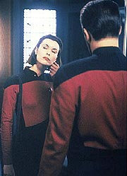
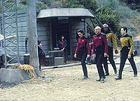
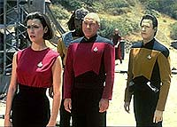
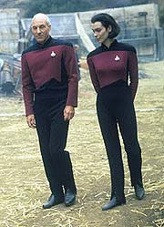

|
MANCHETE
DO EPISDIO
Sensacional
trama poltica cria pano
de fundo para Deep Space Nine
Episdio
anterior | Prximo
episdio
Sinopse:
Data Estelar: 45076.3.
Aps um ataque terrorista a uma colnia da Federao em Solarion
IV, a Enterprise recebe uma mensagem de um homem que se diz
representante dos Bajorianos --uma raa que est lutando h 40
anos para recuperar seu planeta do domnio Cardassiano. O homem
assume a responsabilidade pelo ataque terrorista.
Picard ento contata o almirante Kennelly para discutir as medidas
a serem tomadas com relao ao ataque. O almirante ordena Picard a
encontrar Orta, o lder dos Bajorianos, e oferec-lo anistia, em
troca do fim das hostilidades com os Cardassianos, enquanto a Federao
tentaria negociar, por vias legais, a libertao de Bajor.
 Para
a surpresa do capito, Kennelly tambm envia uma nova oficial para
a Enterprise --a alferes Ro Laren, uma Bajoriana-- para ajudar
Picard na delicada misso. Nem o capito, nem a tripulao se
sentem vontade com Ro, uma oficial rebelde que Kennelly tirou da
priso para atuar nesta misso.
Com a ajuda de Ro, Picard se encontra com Keeve, um membro do
movimento de resistncia Bajoriano, que revela ao capito o
paradeiro de Orta, um esconderijo subterrneo em uma lua. Mas antes
que eles possam ir ao encontro do lder rebelde, eles descobrem que
Ro misteriosamente deixou a nave, teleportando-se para a lua.
Seguindo seu destino, Picard e um grupo avanado so capturados
pelos rebeldes. Aps encontrar Orta, a tripulao se choca ao
encontrar Ro junto dele, embora ela diga que desceu apenas para
ajudar com as negociaes. Embora Picard esteja furioso com Ro por
ter deixado a nave sem permisso, ele fica surpreso quando Orta
anuncia que os Bajorianos no atacaram Solarion IV. Orta tambm d
a entender que Picard est sendo manipulado por algum querendo
eliminar a resistncia Bajoriana.
Ao retornar Enterprise, Ro confessa a Picard que o almirante
Kennelly a estava usando como parte de um plano para oferecer armas
aos Bajorianos em troca do fim das atividades terroristas contra a
Federao. Em troca, Kennelly prometia manter Ro fora da priso,
onde ela tem estado aps uma condenao em corte-marcial.
Convencidos de que a Enterprise est sendo o instrumento de uma
conspirao, Picard e Ro elaboram um plano para desmanch-la. O
capito informa Kennelly de que a nave ir escoltar dois veculos
Bajorianos, com Orta e seu povo, para seu acampamento. Duas naves
Cardassianas aparecem durante a misso, ameaando destruir as
naves, exigem a retirada da Enterprise em uma hora.
 Picard
ento confronta Kennelly, acusando o almirante de ter usado a
Enterprise para entregar Orta e seus colegas terroristas aos
Cardassianos. O almirante ordena que a Enterprise abandone as naves
Bajorianas, o que Picard faz. Quando os Cardassianos destroem os
dois transportes, Picard revela a Kennelly que as naves estavam
vazias, a pedido de Picard. Ele revela ao almirante que os ataques
terroristas em Solarion IV foram conduzidos pelos Cardassianos, que
ento atriburam a culpa a Bajor para que algum dentro da Frota
Estelar estivesse disposto a ajudar na captura de Orta e seus
comandados.
Aps parabenizar Ro pela misso bem-sucedida, Picard convida a
oficial a continuar servindo na Enterprise. Aps um momento de dvida,
ela concorda.
Comentrios:
"Ensign
Ro" consegue, em apenas 46 minutos, no s cumprir seu
objetivo --criar um pano de fundo sobre Bajor e Cardssia para Deep
Space Nine, ento em estgio de criao-- como tambm
elaborar uma incrvel trama poltica envolvente ligando a Federao,
os Cardassianos e os recm-apresentados Bajorianos.
O episdio serve para provar o quo simples desenvolver um
personagem, quando o roteirista j o conhece profundamente. A
alferes Ro aparece com uma presena incrvel em cena desde o
primeiro instante, no deixando dvidas de que seria um dos
personagens recorrentes mais interessantes da histria de A Nova
Gerao. O mrito precisa ser dividido meio a meio entre
Michael Piller, o roteirista e co-criador da histria do episdio
(e de Deep Space Nine), e Michelle Forbes, a atriz que d
vida personagem.
 O
equilbrio entre a ateno dada trama e ao desenvolvimento dos
personagens perfeita, permitindo que o episdio seja duplamente
brilhante. impossvel dizer que a histria sufocou os
personagens, ou que os dilogos bem polidos prejudicaram o
andamento de um enredo mais sofisticado. Est tudo ali, na medida
certa.
Provas de que os personagens no foram esquecidos so evidentes.
Aprendemos muito sobre a moralidade de Picard, seu estilo de comando
e seu carter para com novos oficiais. incrvel ver como o
capito vai de um extremo a outro com relao ao que pensa da
alferes, sem em nenhum momento ferir sua caracterizao. A ponte
para que tudo isso acontea Guinan.
Alis, parece que os roteiristas so dotados de um brilhantismo
fora do comum toda vez que decidem escrever dilogo para Guinan. No
que a sempre fantstica atuao de Whoopi Goldberg no ajude
muito a tornar a personagem interessante, mas a forma como Guinan
capaz de desarmar e antecipar as reaes das pessoas com quem ela
conversa simplesmente incrvel.
J funcionou maravilhosamente com outros personagens, como Geordi ("Booby
Trap"), Worf ("Redemption"),
Picard ("The Measure of a Man")
e Riker ("The Best of Both Worlds, Part
II"). Desta vez, com Ro Laren, no diferente. Alm
de engraados, os dilogos so extremamente pertinentes,
cumprindo duplo papel: conduzindo a histria (aproximando Picard e
Ro) e revelando a natureza mais ntima da Bajoriana.
Ro foi, alm de uma excelente recorrente de A Nova Gerao,
o prottipo para a criao da major Kira Nerys, de Deep Space
Nine. A ligao to bvia que at o penteado de Kira no
piloto da srie ("Emissary")
era igual ao da alferes.
 A
histria tambm comea a pintar os Cardassianos como viles
maravilhosos, que combinam a astcia dos Romulanos com a natureza
violenta dos Klingons. No toa que eles renderam adversrios
to formidveis em Deep Space Nine --tudo foi planejado (em
certa medida) de antemo, desde esse episdio.
A respeito do enredo, vale tambm observar, como nota de rodap,
que a Frota Estelar refletida pela Nova Gerao, pelos
filmes de cinema e pelas sries subseqentes j no a mesma
de outros tempos. Encontramos mais uma vez um almirante cujo carter
est longe de ser louvvel. A desculpa de sempre a ingenuidade,
mas difcil aceitar que um oficial chegue ao almirantado sem
qualquer malcia a respeito das grandes engrenagens que movem a poltica
interplanetria.
Do ponto de vista da produo, a maquiagem se destaca, com o belo
servio feito no rosto deformado de Orta e os narizes Bajorianos
ligeiramente mais trabalhados do que os vistos em Deep Space Nine.
Os efeitos visuais envolvendo a Enterprise e as naves Cardassianas
oferecem a qualidade habitual que sempre marcou A Nova Gerao.
Citaes:
Guinan - "Am I
disturbing you?"
("Estou incomodando?")
Ro - "Yes."
("Est.")
Guinan - "Good, you look like someone who likes to be
disturbed."
("Bom, voc parece algum que gosta de ser incomodada.")
Ro - "I rather be alone."
("Eu prefiro ficar sozinha.")
Guinan - "Oh, no, you wouldn't."
("Oh, no, voc no prefere.")
Ro - "I beg your pardon?"
("Como que ?")
Guinan - "If you wanted to be alone you would've stayed in
your quarters."
("Se voc quisesse ficar sozinha teria fica em seu
alojamento.")
Ro - "You are not like any bartender I met before."
("Voc no como qualquer bartender que eu tenha conhecido
antes.")
Guinan - "And you're not like any Starfleet officer I met
before. But that sounds like the beginning of a... very interesting
friendship."
("E voc no como qualquer oficial da Frota que eu tenha
conhecido antes. Mas isso parece com o comeo de uma... amizade bem
interessante.")
Ro - "I don't stay anywhere long enough to make friends."
("Eu no fico em nenhum lugar por tempo suficiente para fazer
amigos.")
Guinan - "Too late. You just did. Excuse me."
("Tarde demais. Voc acabou de faz-lo. Com licena.")
Trivia:
 Neste episdio temos a primeira
apario de Bajor e de seu povo.
Neste episdio temos a primeira
apario de Bajor e de seu povo.
Les Landau, o diretor deste episdio,
voltaria a dirigir um episdio da Nova Gerao em cinco
semanas. Trata-se de "Unification, Part
I", que conta com a presena de Spock (Leonard Nimoy)
e Sarek (Mark Lenard).
Michelle Forbes, que interpreta a
alferes Ro, j havia aparecido na Nova Gerao como Dara,
no episdio "Half a Life".
Este episdio consta da relao
dos 25 melhores da Nova Gerao, publicada pela revista
Starlog.
Aqui descobrimos que Bajor foi
ocupada pelos Cardassianos h pelo menos 40 anos, que Ro serviu na
USS Wellington ("11001001"),
e que as naves de guerra Cardassianas so da classe Galor.
Presena de Whoopi Goldberg como
Guinan. Whoopi retornar apenas no episdio 122, "Imaginary
Friend".
Aqui vai a lista dos episdios
da Nova Gerao em que Ro Laren aparece:
5 Temporada
103. Ensign Ro
105. Disaster
114. Conundrum
115. Power Play
118. Cause and Effect
124. The Next Phase
6 Temporada
133. Rascals
7 Temporada
176. Preemptive Strike
Ficha
tcnica:
Histria de Rick Berman e Michael
Piller
Roteiro de Michael Piller
Direo de Les Landau
Exibido em 07/10/1991
Produo: 103
Elenco:
Patrick Stewart como
Jean-Luc Picard
Jonathan Frakes como William Thomas Riker
Brent Spiner como Data
LeVar Burton como Geordi La Forge
Michael Dorn como Worf
Gates McFadden como Beverly Crusher
Marina Sirtis como Deanna Troi
Elenco convidado:
Michelle Forbes
como Ro Laren
Ken Thorley como Mot
Cliff Potts como almirante Kennelly
Jeffrey Hayenga como Orta
Frank Collison como Dolak
Scott Marlowe como Keeve Falor
Harley Venton como Collins
Whoopi Goldberg como Guinan
Majel Barrett-Roddenberry como a voz do computador
Episdio
anterior | Prximo
episdio
|